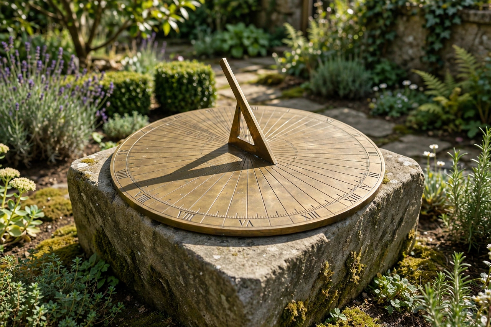

| Sundial | |
|---|---|
 A horizontal sundial; the gnomon's shadow indicates the hour | |
| Type | Timekeeping device |
| Key part | Gnomon |
A sundial is a device that tells the time of day by the apparent position of the Sun in the sky. In the most common form, a raised triangular blade called a gnomon casts a shadow onto a flat surface marked with hour lines; as the Sun moves across the sky, the shadow's edge sweeps across the scale. Sundials were the primary timekeeping technology of the ancient and medieval worlds and remained in use for setting clocks into the 19th century.
The earliest known sundials are shadow clocks from ancient Egypt and Babylon, dating to around 1500 BCE. Greek and Roman astronomers developed the theory of dialling, and elaborate hemispherical and conical dials survive from antiquity. In medieval Europe, scratch dials on church walls marked the hours of prayer, while Islamic astronomers refined dial design for determining prayer times. The invention of the mechanical clock reduced the sundial's practical role, though accurate dials remained essential for regulating clocks until railway time and the telegraph standardised timekeeping.
For a dial to read correctly at all seasons, the gnomon's upper edge (the style) must point toward the celestial pole — parallel to the Earth's axis — so that the shadow rotates uniformly at 15° per hour. In a horizontal sundial, the hour lines are spaced according to the latitude of the site. Because a sundial measures local apparent solar time, readings differ from clock time by the equation of time (up to about 16 minutes) plus any longitude offset from the time-zone meridian.
Main types include horizontal garden dials, vertical wall dials, equatorial dials, polar dials, and portable forms such as diptych and shepherd's dials. Monumental sundials blur the line with astronomy: the Samrat Yantra at Jaipur, India, is a giant equinoctial sundial 27 metres high built in the 1730s.